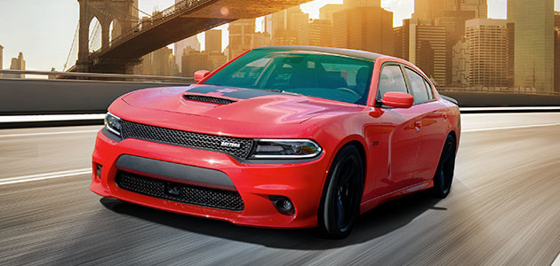

Dodge’un Challenger adını taşıyan ilk modeli aslında Dodge Coronet’nin dördüncü neslinin özel bir versiyonu olarak karşımıza çıktı. Dodge Silver Challenger adı verilen bu araç özel bir model olduğundan adındaki gibi sadece gümüş renkle geliyordu. 5,520 mm’lik uzun bir gövde uzunluğuna sahip olan Silver Challenger’ın aks gemişliği ise 3,100 mm’di.
3.8 litrelik sıralı 6 silindirli “Getaway” ya da 5.3 litrelik V8 “Red Ram” motor seçenekleriyle sunulan Dodge Silver Challenger’da direksiyondan vitesli üç ileri şanzıman standart olarak, otomatik vites seçeneği ise opsiyonel olarak sunulmuştu.
1959 yılında üretilen yeni Silver Challenger’da beyaz yanaklı lastikler, yenilenen jant kapakları, metalik gümüş ve siyah renklerinin kullanıldığı iç tasarım, yeni iç döşeme gibi yenlikler vardı ve bunların hepsi hem standart olarak hem de ekstra hiçbir ücret alınmadan sunuldu.
Mustang ve Camaro’ya Dodge’un cevabı niteliğinde olan Challenger modeli 1969 yılında tanıtıldı ve Plymouth Barracuda ile birlikte Chrysler’in “E-Body” şasi sistemi üzerine kurulan iki otomobilden biriydi. Yeni çıkan Challenger’ın Chevrolet Camaro ve Ford Mustang gibi güçlü rakiplerinin karşısında sağlam durabilmesi için birçok farklı opsiyonel seçenekle birlikte gelmişti. Hatta 1970’te piyasaya çıkan Challenger’larda Chrysler’in envanterinde olan tüm motorlara yer verilmişti.
1964 yılında çıkan Dodge Barracuda aslında “Pony Car” segmentindeki ilk otomobildi fakat kendisinden birkaç hafta sonra tanıtılan Ford Mustang, Barracuda’dan çok daha fazla ilgi gördü. Ford Mustang’in gölgesinde kalmak istemeyen Dodge, kendi deyimleriyle “şimdiye kadarki en güçlü pony car”ı ürettiklerini söyledi ve Challenger’ı tanıttı.
